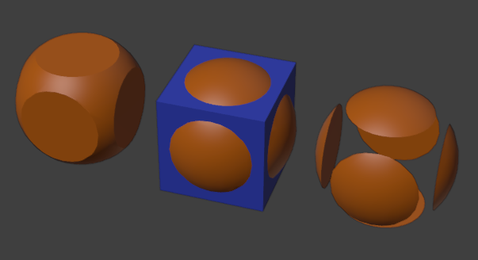
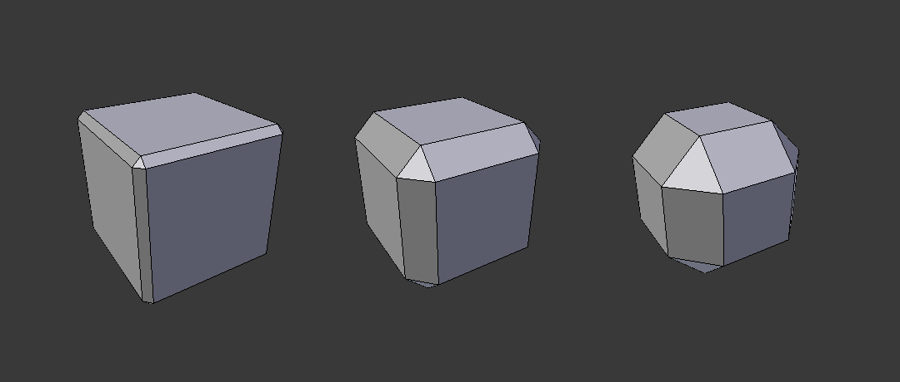
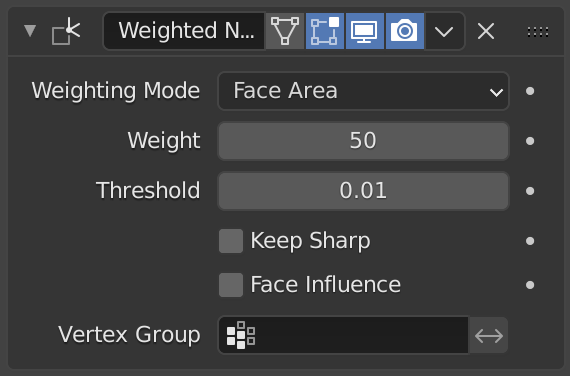

Hammer
Cylinder handle, boxy head, a claw made from two curved prongs.
Hard-Surface Modeling · 55–70 minutes · Grades 8–12
A hand tool is unforgiving: every flat face, drilled hole, and hex bolt has to read as precise. Push your Boolean skills from Lesson 02 further and finish with the shading fix every hard-surface model needs.
Finish line: a clean hand tool — hammer, wrench, or screwdriver — with crisp, evenly lit hard-surface shading.
Cylinders make clean bolt holes. Boolean Difference cuts them exactly where you place them.
Plan
Pick a tool with clear parts
Cylinder handle, boxy head, a claw made from two curved prongs.
A flat bar with a hex-shaped cutout on one or both ends.
A cylinder handle, a thin shaft, and a flat or cross-shaped tip.
Cuts
Booleans, one level further
Lesson 02 cut a rectangular window opening. Hard-surface props usually need round or hex cuts — bolt holes, a wrench's gripping socket, a hanging hole in a handle.
Shift+A → Mesh → Cylinder, with enough sides (16–32) to read as round, or set to 6 for a hex socket.
Apply scale on both objects, then use Properties Editor → Modifiers (wrench) → Add Modifier → Generate → Boolean. Set Operation to Difference and Object to the cutter.
You can add several Boolean modifiers to one object — one per hole. Keep each cutter as a separate, named object so you can adjust one hole without disturbing the others.

Shade
The hard-surface shading fix
Smooth by Angle can still leave dark pinches where a beveled edge meets a large flat face. A Weighted Normal modifier recalculates normals based on face area and angle.
Round the edges
Small width, 2–3 segments, Limit Method set to Angle so flat faces stay flat.
Fix the shading
Add after Bevel. It recalculates smooth shading based on face area, removing dark pinching that Smooth by Angle can leave on hard-surface bevels.
Give it wall thickness
Turns a flat surface into a real solid shell with a set thickness — useful for a wrench's flat bar profile.


Build
Hands on
Cylinder handle plus a boxy or hexagonal head, sized against a hand-scale reference (a fist is roughly 0.1m across).
Add cylinder or hex-prism cutters for bolt holes or a socket, and apply a Boolean Difference for each.
Use Properties Editor → Modifiers (wrench) → Add Modifier → Generate → Bevel on each part with a small, consistent width.
Use Properties Editor → Modifiers (wrench) → Add Modifier → Normals → Weighted Normal, then drag it below Bevel. Blender 5.2 has no Auto Smooth checkbox in this modifier.
Join or parent the parts, rename everything in the Outliner, and press Ctrl+S.
Fix
Common hard-surface bugs
The cutter's origin or the tool's origin was moved after the modifier was added. Nudge the cutter object itself, not the tool.
Scale wasn't applied on one of the two objects before the operation. Apply scale, then redo the cut.
Weighted normals can be lost in some formats. Apply the Weighted Normal modifier from its panel's down-arrow menu → Apply, then enable the exporter's normals option when that format provides one.
Increase its vertex count (16–32) before using it as a Boolean cutter — a low-poly cutter carves a low-poly hole.
Check
Exit ticket
Definition of done